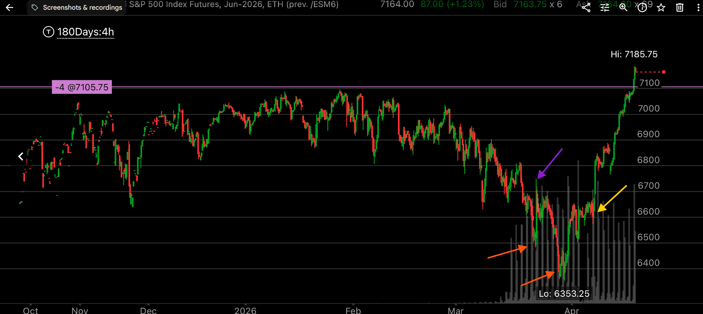
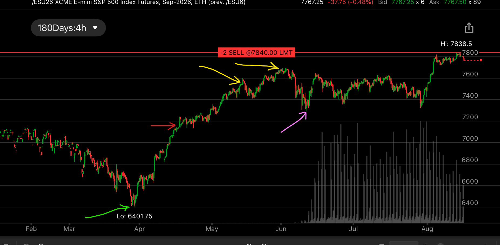

多日连续上涨，形成加速走势，但是两个连续低点没有形成加速
- 从低点连续多日上涨，看起来形成加速走势
- 但是因为它在两个连续低点没有加速，所以不是加速走势，它在高点也形成了持续上涨走势。

图示:
- 两个红色箭头，是连续的两个低点。因为大盘没有反转，所以不需要加速。也可以看到，第二个低点不算加速下跌
- 第二个低点持续时间更长，它反弹到了第一个低点反弹的高点附近的时候，也就是紫色箭头的附近，开始停顿和震荡。
直到持续时间超过第一个箭头的反弹后，才开始加速上涨，这个时间如果从最高点算，实际上加速的，但是，如果从倒数第二个低点算，
不是加速走势。所以，它并没有加速，也不会反转。 它后面也变成了持续上涨的走势。
- 黄色箭头就是它等待时间的地方，一旦时间超过第一个低点反弹的时间，它就继续上涨了。
- 相对弱势后，两段走势，第二段是两次加速

图示:
- 绿色和红色箭头，是从低点创新高的加速过程，用时12天。
- 两个黄色箭头，是相对弱势。让它大跌，但是未来还会上涨。
- 紫色箭头，是两次向下加速的走势。形成底部。然后创新高。